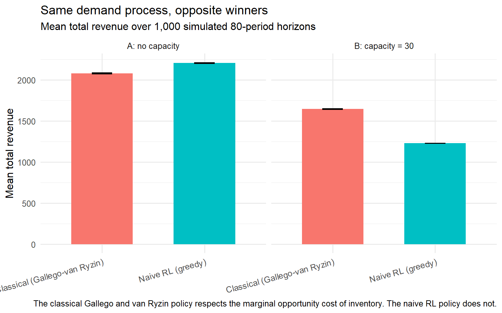

flowchart TB
subgraph static["Static competition"]
A["No capacity constraint<br/><b>Elasticity-based DP</b><br/>e-commerce, subscriptions"]
B["Capacity constraint<br/><b>Classical RM</b><br/>Belobaba, Gallego-van Ryzin"]
end
subgraph dynamic["Dynamic competition"]
C["No capacity constraint<br/><b>Modern DP plus game theory</b><br/>Rhodes-Zhou (2024)"]
D["Capacity constraint<br/><b>Frontier: thin literature</b><br/>SIXT, airlines, hotels, fleet marketplaces"]
end
classDef standard fill:#eef5fb,stroke:#2C7FB8,color:#1f5f8b;
classDef frontier fill:#fbe6e3,stroke:#D95F0E,color:#b23a2b;
class A,B,C standard;
class D frontier;
Dynamic Pricing Is Not Revenue Management. Confusing Them Is How Markets Get Worse for Everyone.
pricing
revenue management
causal inference
reinforcement learning
R
A practitioner’s walkthrough of pricing systems: the fifty-year revenue management foundation, the four legitimate extensions modern dynamic pricing added, the five failure modes where the modern wave went off the rails, a four-regime typology of the pricing problem, the causal-inference bridge to off-policy evaluation, a five-layer system architecture, an R simulation of classical dynamic programming versus naive reinforcement learning under a capacity constraint, and a review checklist for pricing-system architectures.
Most data science teams building dynamic pricing systems in the 2020s do not know that Revenue Management exists as a discipline. They reach for reinforcement learning, contextual bandits, or deep sequence models, and they treat pricing as a pure learning-under-uncertainty problem. In industries where capacity is finite and perishable, that omission is not a detail. It is a structural mistake that ships to production. Dynamic pricing and revenue management are treated as synonyms across large parts of the industry, and confusing them is expensive.
This persists for a specific reason. The Revenue Management literature, developed between the 1970s and the 2000s inside airlines, hotels, and rental, sits in operations research journals that most machine learning teams never read. Belobaba (1987) documented Expected Marginal Seat Revenue heuristics generating a 6.2 percent overall revenue gain over manual seat-inventory control in a live test of thirty-six flight pairs at Western Airlines, a field result that sits alongside the 2 to 5 percent range the revenue-management literature has reproduced for mature yield-management systems ever since, and it has survived four decades in production. Recent reinforcement-learning-for-pricing papers report uplifts in the range of 14 to 21 percent on simulated e-commerce environments without any capacity constraint. That range is a characterisation of the recent RL-for-pricing simulation literature rather than a single measured constant, and it should be read as one. The gap between the field number and the simulated range reflects a difference in setting, not a difference in method. One environment has capacity friction. The other does not. When dynamic pricing without RM discipline is deployed at marketplace scale, the empirical record is not favourable. Binns et al. (2025), studying roughly 1.5 million Uber trips from 258 drivers in the United Kingdom before and after the introduction of dynamic pricing, found that driver pay decreased, Uber’s cut increased, job allocation and pay became less predictable, inequality between drivers rose, and drivers spent more time waiting for jobs. Revenue Management is not old-fashioned. It is the discipline that answered the pricing question under scarcity fifty years ago, and it did so before the current wave of machine-learning-driven pricing decided the answer was no longer needed.
This post walks the boundary between Revenue Management and modern dynamic pricing. Part I introduces RM as a discipline in one page: the canonical results that any serious pricing system in a capacity-constrained industry inherits by default. Part II covers what modern dynamic pricing legitimately added, namely choice-based RM in its recent form, personalized pricing with regret bounds, causal machine learning for heterogeneous treatment effects, and marketplace dynamics. Part III walks through five failure modes of the current wave: ignoring capacity, backtests that do not survive off-policy, objective misspecification, assuming monopoly when Rhodes and Zhou (2024) show the welfare result reverses under asymmetric data access, and ignoring the other side of the marketplace as Binns et al. (2025) document empirically. Part IV maps the four regimes of capacity or no capacity crossed with static or dynamic competition. Part V reframes the whole discussion in the causal-inference language this blog has used since the Counterfactual post. Part VI describes what a serious pricing system contains, in five layers. Part VII walks through an R simulation in which a naive RL policy fails where a classical Gallego and van Ryzin dynamic program is stable. Part VIII is the review checklist I run before I sign off on any pricing system. One negative claim up front: this is not a textbook chapter on Revenue Management. It is a practitioner argument about the boundary between two disciplines and the cost of confusing them. The reader who wants the full theory should consult Talluri and van Ryzin (2004).
Part I. Revenue Management foundations, in one page
I.1 The structural pricing problem RM addresses
Revenue Management as a discipline was built for a specific class of pricing problems with three defining features. First, capacity is finite. There is a fixed number of seats on the flight, rooms in the hotel, cars in the rental fleet, or slots on the surgeon’s Wednesday. Second, capacity is perishable. Unsold seats, rooms, cars, or slots have zero salvage value the moment the horizon closes. Third, demand is stochastic and time-varying. Customers arrive at random and with heterogeneous willingness to pay, and the arrival process changes across the booking horizon.
These three features change the pricing problem qualitatively, not just quantitatively. In the unconstrained elasticity problem covered earlier in this series, the pricing team maximises expected profit given a static demand curve. Nothing perishes. Nothing runs out. Reoptimising later has the same information structure as reoptimising now. Under RM, none of those assumptions hold. Selling a low-fare seat today closes off the possibility of selling that seat at a high fare tomorrow, and the closure is irreversible because the flight departs. Selling a car for three days today closes off the possibility of selling that same car for three weeks starting next Monday. Every pricing decision today carries an option value against every possible sale tomorrow, and that option value has to be included in the pricing rule.
Four industries anchor the canonical form of this structure: airlines, hotels, rental (rent-a-car and short-term rentals), and any perishable-capacity service industry from surgery scheduling to broadcast advertising. Those are the industries where Revenue Management was built, tested, and refined for half a century. The formal object that carries the option value through the entire discipline is the value function \(V(x, t)\), the expected revenue-to-go with \(x\) units remaining and \(t\) periods left to the horizon. Everything in Part I is a way of computing that object or a special case of it.
I.2 Littlewood’s rule (1972)
Littlewood (1972, reprinted 2005) formalised the first result. Consider two fare classes, a high fare \(f_H\) and a low fare \(f_L\), with \(f_H > f_L\). Low-fare demand arrives before high-fare demand, which is the operational reality of advance-purchase discount fares. Let \(F(x)\) be the probability that high-fare demand exceeds \(x\) seats. The optimal protection level for high-fare customers is the value \(x^{*}\) that satisfies
\[ F(x^{*}) \;=\; \frac{f_L}{f_H}. \]
In plain language, we protect seats for high-fare customers up to the point at which the marginal expected revenue from an additional protected seat equals the fare of the low-fare customer being displaced. Accept a low-fare booking whenever the certain revenue \(f_L\) from selling one more discounted seat exceeds the expected revenue \(f_H \, F(x)\) from holding that seat for a high-fare customer who may or may not arrive. This is the first formal result in Revenue Management, and it captures the option-value logic of I.1 in one line of algebra. The protection level rises as the fare ratio \(f_L / f_H\) falls, because a cheaper discount fare is worth displacing for a smaller probability of a high-fare arrival.
Littlewood’s rule is a two-class, single-resource, static result. It assumes the two fares are known, the arrival order is fixed, and there is a single leg to protect. Those assumptions are exactly what the next four subsections relax, in the order the discipline relaxed them.
I.3 EMSR and the multi-class extension (Belobaba 1987)
Belobaba (1987) generalised Littlewood’s rule from two fare classes to multiple nested fare classes, which is the operational reality of every airline seat map. The resulting Expected Marginal Seat Revenue heuristics, EMSR-a and EMSR-b, are the two dominant variants used in production yield management systems. EMSR-b, the more widely deployed of the two, aggregates the demand of all higher fare classes into a single weighted-average fare and applies a Littlewood-style protection calculation against that aggregate, which is why it scales cleanly to the six or more nested classes a real fare structure carries.
Belobaba documented the performance of the method in a live field test at Western Airlines, where an Automated Booking Limit System applied EMSR-based limits to a set of flights while a matched control group was managed by analysts using the manual method then in use. Across the thirty-six flight pairs judged to give a valid comparison, the automated flights generated a 6.2 percent overall revenue gain over the manually controlled flights, with an average load factor advantage of 10.3 percentage points. The result was not uniform: a twenty-five-pair positive-impact group showed a weighted 12 percent revenue advantage for the automated flights, and an eleven-pair negative-impact group showed a 5.9 percent shortfall, driven by fare-class upgrade behaviour the early EMSR formulation did not model. The net 6.2 percent is the honest headline, and it is measured against the right baseline, the seat inventory a competent human process would otherwise have sold, in the right regime, a single leg with fixed perishable capacity. A revenue gain of this magnitude flows almost entirely to the bottom line, because the marginal cost of selling one more seat on an already-scheduled flight is close to zero, so in an industry with thin operating margins it is often the difference between a profitable carrier and an unprofitable one. The combination of the correct baseline and the correct regime is why the number has held up for four decades. It is the standard every later method should be measured against, and it sits at the upper edge of the 2 to 5 percent range the broader revenue-management literature reports for mature yield-management systems.
I.4 Gallego and van Ryzin (1994, 1997) — optimal dynamic pricing
Gallego and van Ryzin (1994) posed the canonical single-product dynamic pricing problem in continuous time. A seller has a stock of a perishable product to sell over a finite horizon. Demand arrives as a price-sensitive point process whose intensity \(\lambda(p)\) is a known decreasing function of the posted price \(p\). The seller chooses the price path to maximise expected revenue over the horizon subject to the inventory constraint. Writing \(x\) for remaining inventory and \(t\) for time to the horizon, the value function \(V(x, t)\), the expected revenue-to-go with \(x\) units remaining and \(t\) periods left, satisfies the Hamilton-Jacobi-Bellman equation
\[ \frac{\partial V(x, t)}{\partial t} \;=\; \max_{p \geq 0} \; \lambda(p) \left[\, p - \bigl( V(x, t) - V(x-1, t) \bigr) \right], \]
with boundary conditions \(V(x, 0) = 0\) for all \(x\) and \(V(0, t) = 0\) for all \(t\). The bracketed quantity is the marginal revenue of a sale at price \(p\) net of the option value \(V(x, t) - V(x-1, t)\) of retaining the unit for later sale. The optimal price at every moment balances the immediate revenue of a sale against the expected future revenue given up by depleting inventory by one unit.
Two structural results follow, and both are worth stating because they are the guarantees the modern wave discards without replacement. First, the optimal price is monotone: it increases as inventory tightens at a fixed time to horizon, and it increases as the horizon shortens at a fixed inventory level, because in both cases the marginal opportunity cost \(V(x, t) - V(x-1, t)\) rises. Second, for a demand family in the exponential class Gallego and van Ryzin solve the optimal policy in closed form, and for general demand they prove that a fixed-price heuristic derived from the deterministic relaxation is asymptotically optimal as the expected sales volume grows. When inventory is abundant relative to expected demand, the option cost is low and the optimal price is close to the myopic revenue-maximising price. When inventory is scarce, the option cost is high and the optimal price rises to reflect the shadow value of a remaining unit. This is the mathematical foundation of every dynamic pricing system in airlines, hotels, and rental that respects capacity.
Gallego and van Ryzin (1997) extended the framework to multiproduct settings with shared resources, the network-revenue-management problem that airlines and hotel chains actually solve in production. There the state is a vector of resource inventories, a single itinerary consumes capacity on several legs at once, and the marginal opportunity cost generalises to a sum of resource-level shadow prices. They again bound the stochastic problem by its deterministic relaxation and show that the implied bid-price and partitioned-booking heuristics are asymptotically optimal as expected sales volume tends to infinity. The single-resource intuition survives intact: price against the shadow value of the scarce resource, and let that shadow value rise as the resource depletes.
NoteReinforcement learning rediscovered the value function
The modern reinforcement-learning pricing literature has effectively rediscovered \(V(x, t)\) under simpler assumptions. A value function that maps a state to expected discounted future reward, updated by a Bellman recursion, is exactly the object Gallego and van Ryzin characterised in 1994. The difference is that the classical treatment includes remaining inventory in the state by construction, so the opportunity cost of the marginal unit is always present. An RL policy trained without an explicit capacity variable in its state space is solving a different Bellman equation, one in which the constraint never binds, and its value function is not the classical one. The rediscovery is real. The amnesia about the inventory state is the problem.
I.5 Choice-based revenue management (Talluri and van Ryzin 2004)
The models in I.2 through I.4 assume that customers accept or reject the posted price for a single product. In practice customers choose from a menu. Talluri and van Ryzin (2004) formalised choice-based Revenue Management: customers face a menu of available fare products and choose according to a discrete choice model, typically multinomial logit or one of its generalisations. The revenue optimisation problem becomes a joint problem in which the assortment offered and the prices charged are selected simultaneously to maximise expected revenue given the choice model and the remaining inventory. The state is still \(x\) and \(t\), and the object being maximised is still \(V(x, t)\), but the control is now the offer set rather than a single price, and the demand for any product depends on the whole menu through the substitution structure of the choice model. Their central result is that the optimal policy has a surprisingly simple form: at each moment the operator offers an efficient subset of fare products, and the classical nested-allocation controls used in practice are optimal under identifiable conditions on the choice model.
Choice-based RM matters for the argument of this post. Once the choice model is in place, the pricing problem looks structurally similar to the modern personalized-pricing problem covered later in Part II with Ban and Keskin (2021). Talluri and van Ryzin were solving in 2004, with a discrete choice model and inventory constraints, a version of what a large fraction of the recent personalized-pricing literature now solves with contextual bandits and no inventory. Revenue Management has already been a personalized-pricing discipline for two decades, in a form the current wave has largely forgotten.
Revenue Management is not a general theory of pricing, and Part I would be dishonest without saying so. It was built for one structure: perishable capacity, finite horizon, stochastic demand. It is silent about subscription pricing, freemium conversion, marketplace commission-rate setting, and pricing for goods with effectively infinite capacity. That silence is where modern dynamic pricing legitimately extends the discipline, and Part II covers the four extensions. The historical note is worth keeping in view while reading them. Revenue Management emerged in commercial aviation in the late 1970s after the deregulation of the US airline industry, when incumbent carriers had to price against low-cost entrants for the first time. American Airlines’ yield management system was widely credited with saving the carrier hundreds of millions of dollars a year through the 1980s, and it became the operational template that hotels and rental firms adopted through the 1990s. The academic formalisation culminated in Talluri and van Ryzin (2004), which remains the standard reference. A mature theoretical framework, half a century of production experience, and a value function that any pricing scientist working in a capacity-constrained industry inherits by default. The natural question is what modern dynamic pricing has added since. Part II answers it.
Part II. What modern dynamic pricing legitimately added
Part I laid out the foundation: Littlewood’s rule, Belobaba’s EMSR, Gallego and van Ryzin’s optimal dynamic pricing under scarcity, their network extension, and Talluri and van Ryzin’s choice-based framework. Part II describes four extensions modern dynamic pricing has legitimately added on top of that foundation. The framing matters. Extensions are not replacements. Each of the four addresses a specific gap in the classical framework without abandoning its core structure of scarcity, finite time, stochastic demand, and heterogeneous willingness to pay. Where the modern wave has gone wrong, which Part III documents, is almost always in treating these extensions as substitutes for the classical results rather than as additions to them.
Four extensions, in order. Personalized pricing with learning under demand uncertainty. Causal identification of pricing treatment effects. Choice-based assortment optimization at the scale of modern e-commerce. Two-sided marketplace pricing where the operator must clear supply and demand simultaneously.
II.1 Personalized pricing with learning under uncertainty
Classical RM assumes the demand distribution is known, or estimated once from historical data and then treated as fixed inside the optimization. It does not address the sequential learning problem faced by an operator who must set prices before the demand distribution is fully characterised, who observes only the outcomes at prices actually posted, and who wants regret guarantees against the best fixed policy in hindsight. The pricing decision under demand uncertainty is a bandit-style learning problem, and the classical RM literature does not directly cover it.
Ban and Keskin (2021) formalise the personalized dynamic pricing problem in exactly this setting. The seller observes a \(d\)-dimensional feature vector for each arriving customer and estimates a heterogeneous demand model in which the price sensitivity depends on \(s\) of the \(d\) features, with \(s\) much smaller than \(d\). Their algorithm combines LASSO regularisation for demand estimation with a deliberate price-experimentation rule that trades a little revenue now for a better-identified demand curve later. They prove that expected regret against a clairvoyant who knows the true demand relationship is at least of order \(s \sqrt{T}\) for any admissible policy over a horizon of \(T\) periods. Their near-optimal policy achieves regret of order \(s \sqrt{T} \log T\) when the seller knows which features enter the demand model, and of order \(s \sqrt{T} (\log d + \log T)\) when it does not, which is also near-optimal. On a data set from an online auto-loan company the experimentation-based policy improved on the lender’s historical pricing by 47 percent in expected revenue over six months. The bound formalises the sample-complexity cost of personalization: regret scales with the square root of the horizon and with the sparsity \(s\), and only logarithmically with the ambient feature dimension \(d\), so a rich feature vector is affordable as long as the true model is sparse.
The natural home for this framework is any setting with rich per-customer features and enough interaction volume to justify sequential learning: e-commerce retailers with logged-in customer histories, subscription pricing where the profile is observable at renewal, digital-goods pricing where the marginal cost of a bad price is small. It is not the natural framework for airline yield management, where willingness to pay is inferred from booking class and time-to-departure rather than from a per-customer feature vector, and where the Gallego and van Ryzin (1994) approach remains closer to operational reality than any bandit reformulation.
The extension refines the demand model that feeds \(V(x, t)\). It does not replace the value function. The opportunity cost of selling one more unit of scarce inventory is still the object being computed, and the optimal price is still the price at which marginal revenue equals that opportunity cost. What Ban and Keskin (2021) add is a principled way to estimate the demand curve at each price and each customer type when the seller starts without a fully characterised distribution. The optimization stage of the classical pipeline is unchanged. The estimation stage is what is genuinely new.
II.2 Causal identification of pricing treatment effects
Classical RM takes the demand function as a primitive to be estimated from historical data. It does not address the identification problem raised in the Elasticity and Forecasting posts in this series. Historical prices are not randomly assigned. The observed price-quantity relationship is a confounded mixture of demand response and past pricing policy, so estimating the elasticity from correlational data gives a biased demand model, which then feeds a biased optimal price back into \(V(x, t)\). The classical RM literature was written before causal identification became a first-class methodology in applied econometrics, and its estimation step assumes away a problem that the last two decades of causal inference have made unavoidable.
Miller and Hosanagar (2020) apply causal machine learning to the problem of personalized discount targeting, in work first presented at ICIS 2020 and extended in a later working paper that adds technographic trace data, the device and browser metadata revealed in standard web protocols. Their contribution is to identify the heterogeneous treatment effect of a discount conditional on observable features, using data from an online experiment as the causal anchor and then evaluating the implied targeting policy through counterfactual policy evaluation under standard unconfoundedness and overlap assumptions. The resulting rule discounts only the customers for whom the estimated treatment effect exceeds the discount cost, and the extended working paper reports profit increases on the order of 3 to 6 percent over both a non-targeted baseline and standard benchmark techniques, worth thousands of dollars of incremental value across the studied campaigns. The device-level variables, screen size, operating system, and browser, prove more valuable for targeting than geographic or behavioural variables.
This is the natural framework whenever the seller can run experiments, geo hold-outs, or regression-discontinuity designs on the pricing decision itself. Cohen, Hahn, Hall, Levitt and Metcalfe (2016) use the discontinuities in Uber’s surge pricing algorithm as a quasi-experiment to identify demand elasticities and consumer surplus at scale. Their approach is the canonical illustration of how platform-level pricing decisions can be studied causally when random assignment is infeasible but algorithmic discontinuities are present. The same logic applies to any pricing decision where the seller controls exposure assignment, whether through explicit A/B tests, switchback designs of the kind covered in the Switchback post, or naturally occurring thresholds.
The extension enters the classical pipeline at the estimation stage. It replaces “estimate the demand model from historical data” with “identify the causal demand model from experimental or quasi-experimental variation.” The value function \(V(x, t)\) still applies, the operator still solves the same scarcity-and-time optimization, and the optimal price still equates marginal revenue with opportunity cost. What changes is that the demand curve feeding the optimization now carries a defensible causal interpretation rather than a correlational one, and the resulting price is defensible against the critique that the historical policy is baked into the estimate.
II.3 Choice-based assortment optimization at scale
Talluri and van Ryzin (2004), covered in Part I, established the choice-based framework for revenue management. Customers arrive, evaluate the offered set, choose according to a discrete choice model, and the operator optimises expected revenue subject to inventory and capacity constraints. The formal paper handles small assortments under the standard multinomial logit and its close relatives. It does not directly address the scale of modern e-commerce and marketplace assortment optimization, where the offered menu can run into tens of thousands of products, and where the customer’s choice is jointly influenced by search rank, recommendation surfaces, and inventory constraints that shift within a session.
The modern extension keeps the Talluri and van Ryzin (2004) choice-based structure and scales it through combinatorial optimization and learning-based assortment selection. The formalism is the same. Customers arrive, choose from the offered assortment according to a multinomial logit or a generalisation of it, and the platform optimises expected revenue subject to inventory and capacity constraints. What differs is the size of the feasible set of assortments, the fact that price and rank are chosen jointly with which products to display, and that both consideration sets and substitution patterns are estimated from very large clickstream logs. Much of the operational detail lives inside large e-commerce platforms and is not published, so the academic record understates the extent to which the classical choice-based structure now runs at industrial scale.
This is the natural framework for large e-commerce marketplaces where product ranking, price, and availability are decided jointly. Cannibalization becomes a first-order effect at this scale. A promoted product wins clicks that other products would have won under a different ranking, and the net revenue impact is the difference between the incremental sales on the promoted item and the displaced sales elsewhere. The Cannibalization post in this series developed this decomposition explicitly, and the choice-based objective is what makes it computable rather than a matter of opinion.
Choice-based assortment optimization at scale is a direct extension of Talluri and van Ryzin (2004). It respects the substitution structure that classical choice-based RM identified. It extends that structure to assortments the classical work did not contemplate and to jointly chosen ranking and price decisions the classical work did not consider. The optimization is harder computationally. The underlying formal object is the same.
II.4 Two-sided marketplace pricing
Classical RM treats demand and supply as separate objects. Demand is stochastic and estimated. Supply is fixed capacity, given exogenously by the airline’s fleet, the hotel’s rooms, or the rental fleet allocated to a station. Modern platforms whose economics are two-sided, ride-hailing, food delivery, lodging with independent hosts, freelance marketplaces, cannot treat supply as fixed. Supply is itself a function of the price offered to suppliers, and any dynamic pricing rule that ignores the supply-side response mis-specifies the operator’s problem.
The Two-Sided Markets post in this series covered the general economic framework. The canonical operational reference for platform pricing is Cohen, Hahn, Hall, Levitt and Metcalfe (2016) on Uber, which identifies the joint effect of surge pricing on rider demand and driver participation and provides the first credible large-scale estimate of consumer surplus for an algorithmically priced marketplace. The two-sided extension of dynamic pricing has to solve a fixed-point problem. The equilibrium price is the price that clears both sides given the response functions on each side, and the operator’s problem is to find that equilibrium under time-varying conditions, then re-solve as conditions change.
This framework is essential whenever the operator does not control supply directly. Ride-hailing, food delivery, freelance marketplaces, and any hotel platform with independent hosts sit inside it. It is not essential for classical inventory-holding businesses where supply is fixed by procurement or capacity decisions made much earlier. Rent-a-car is an interesting hybrid. In the short run it sits close to the classical inventory model, since fleet at each station is fixed. At planning horizons where fleet allocation across stations is itself a decision variable, it sits closer to the two-sided formulation, because the shadow price of a car at station A depends on the equilibrium rental price at station B.
The extension does not replace the Gallego and van Ryzin (1994) foundation. It adds a second demand model, on the supply side, and requires the optimization to clear both sides simultaneously. The value function generalises to include the state of both sides of the market, so \(V(x, t)\) becomes a function of two inventory-like state variables rather than one. The scarcity-and-time structure survives. What has to change is that the operator now solves a joint fixed-point problem in two prices rather than a single-side pricing problem in one.
Four extensions, all legitimate, all respecting the classical RM foundation, each addressing a specific gap that fifty years of RM theory did not fill. Part III turns to where the modern wave has gone wrong. In every failure mode we cover there, the pattern is the same. A modern extension developed for one setting is applied to a different setting where it does not fit, and the classical RM result that would have applied is discarded rather than kept as the base case. The five failure modes in Part III are all instances of this pattern, and two of them are already documented at scale in the recent literature.
Part III. Where the modern wave went off the rails
Part II described four extensions the modern wave has legitimately added on top of the revenue management foundation. Part III describes five failure modes where the modern wave has gone off the rails. The pattern in every failure mode is the same. A modern extension developed for one setting is applied to a different setting where it does not fit, or a classical RM result is discarded without a replacement of equivalent guarantee. Two of the failure modes are documented at scale in the recent literature. Three are structural failures any senior pricing practitioner has seen repeatedly on real engagements.
Five failure modes follow, in order of increasing severity. Reinforcement learning without capacity. Backtests that reward the incumbent. Objective misspecification. Personalized pricing under asymmetric information. Marketplace pricing that ignores the other side.
III.1 Reinforcement learning applied to capacity-constrained pricing without a capacity constraint
The dominant failure mode is applying a reinforcement learning pricing algorithm, trained in an environment without a capacity constraint, to a setting where capacity is hard and perishable. The RL policy learns to raise prices when demand is high and cut them when demand is low, subject only to a revenue-maximisation objective. It does not learn to respect the opportunity cost of the marginal unit when inventory is scarce. In a rental fleet, a hotel, or an airline, the policy sells out early at low prices and then has no inventory left for the late high-fare customers who would have paid more.
This failure mode does not have a single canonical published case at production scale, because companies rarely publish rollback post-mortems. It has appeared repeatedly in the academic literature as an unnoticed assumption. The reinforcement-learning pricing papers of the last five years, including recent multi-agent contributions in supply chain and retail settings, routinely benchmark their algorithms against first-come-first-served or fixed-price baselines rather than against EMSR or Gallego and van Ryzin. When the baseline is first-come-first-served, the RL uplift looks large. When the baseline is the EMSR discipline Belobaba (1987) documented, the uplift shrinks or disappears. This is the mechanism behind the 14 to 21 percent simulated numbers characterised in the Opening and the flat production result that follows deployment.
The classical result the modern wave discards here is Gallego and van Ryzin (1994). Their value function \(V(x, t)\) encodes the opportunity cost of the marginal unit as a function of remaining inventory and time. Any pricing policy that respects that opportunity cost will outperform a policy that does not when the constraint binds. A reinforcement learning policy trained without an explicit capacity variable in its state space cannot learn this opportunity cost, because it never sees an environment where the constraint binds. The extension that modern RL adds, sequential learning under demand uncertainty, is legitimate and useful. Applying it without the classical inventory constraint is not an extension. It is a regression.
In my work I refuse to sign off on a reinforcement-learning pricing system for a capacity-constrained business without an explicit capacity variable in the state space and an explicit comparison against a Gallego and van Ryzin baseline. If the RL system beats that baseline on a defensible metric, it deserves to be deployed. If it beats only first-come-first-served, the uplift is measured against the wrong benchmark and the deployment is a regression dressed as innovation.
III.2 Backtests that reward the incumbent
The second failure mode is a subtle form of the off-policy evaluation problem the Forecasting and Cannibalization posts covered at length. A team backtests a new dynamic pricing system against historical data generated by an incumbent pricing policy. The backtest shows strong uplift. The team deploys. In production, the uplift does not materialise. The mechanism is that the historical data was generated by a policy that already exploited the demand patterns the new model detects, and the new model’s apparent gains come from a change in policy that has no marginal effect on the already-optimised production loop.
Schultz, Stephan, Sieber, Yeh, Kunz, Doupe and Januschowski (2024), of Zalando, published a working paper on causal forecasting for pricing that documents this mechanism explicitly. They compare a standard predictive demand forecasting model, trained on historical Zalando pricing data, against a causal demand model built on the double machine learning framework that identifies the treatment effect of price using experimental and natural-experiment variation. The predictive model shows strong in-sample fit and reasonable on-policy prediction accuracy. The causal model trails slightly on on-policy accuracy and has a clear advantage off-policy, where the forecast horizon contains price policies not seen in training. The paper is one of the clearest published statements of the off-policy problem in a production pricing setting.
The classical result the modern wave discards here is the entire empirical foundation of demand estimation in RM. Belobaba (1987) and Gallego and van Ryzin (1994) both took the demand model as a primitive to be estimated from data, and both implicitly assumed the estimated model would generalise to the policy the operator was about to deploy. That assumption is defensible when the policy change is small and the demand environment is stationary. It is not defensible when the policy change is large or the environment shifts. The modern extension of causal identification, covered in II.2, was developed precisely to address this failure mode. Teams that skip that extension and rely on predictive backtests alone are shipping systems whose apparent gains do not survive contact with production.
Every pricing-system backtest I review has to include an off-policy evaluation component. The predictive fit on historical data is a diagnostic, not a decision input. The decision input is the estimated policy value under the deployed policy, and that value has to be defended with a causal identification argument or an experiment.
III.3 Objective misspecification
The third failure mode is optimising the wrong objective. A pricing system is deployed to maximise revenue-per-transaction, revenue-per-day, or revenue-per-user. The business is paid on profit, on lifetime value, on market share, or on a combination. When the deployed objective differs from the business objective, the system moves the deployed metric and leaves the business metric flat or worse. The Cannibalization post covered a specific case: local metrics on the intervention surface rise while total metrics on the exposed cohort stay flat.
The pattern is systematic across pricing deployments. In marketplaces where the platform’s revenue is a commission on transaction value, a pricing system that maximises transaction value can reduce total commissions when the elasticity of quantity is high enough. In subscription businesses, a system that maximises monthly revenue can reduce lifetime value when the price increase raises churn more than it raises revenue-per-user. In rental-car and hotel pricing, a system that maximises revenue-per-day can reduce utilisation when the price increases cut load factor. The failure mode is not a specific paper. It is a category of systems where the deployed metric and the business metric are different objects, and the system optimises the wrong one.
The classical result the modern wave discards here is the explicit objective statement in Gallego and van Ryzin (1994) and Talluri and van Ryzin (2004): the operator maximises expected revenue subject to capacity constraints, and expected revenue is defined precisely as the total revenue collected across the booking horizon. The classical literature was careful about the objective. The modern wave often is not, because the pricing system is coupled to a downstream dashboard that reports whatever metric is convenient to instrument. The dashboard-driven objective displaces the business-driven objective, and nobody notices until the quarterly review.
Before approving a pricing system for production, ask what objective it optimises and whether that objective is the same as the one the business is paid on. If they differ, the system is optimising a proxy, and the proxy has to be defended as a good proxy for the business objective under the specific market conditions the system will operate in.
III.4 Personalized pricing under asymmetric information across firms
The fourth failure mode is a subtle consequence of personalized pricing at the market level rather than at the firm level. When one firm personalizes prices using consumer data and its competitors do not, the personalizing firm can extract more surplus from the customers whose willingness to pay it can identify. The competitive dynamics of this asymmetric personalization are not the same as either the symmetric-personalization case, in which all firms personalize, or the symmetric-uniform case, in which no firm does. The intermediate case can be worse for consumers than either symmetric benchmark.
Rhodes and Zhou (2024), in the American Economic Review, prove this in a general oligopoly model. In the short run, when market structure is fixed, the impact of personalized pricing hinges on the degree of market coverage, meaning how many consumers actually buy. If coverage is high, because production cost is low or the number of firms is large, personalized pricing intensifies competition, harms firms, and benefits consumers. If coverage is low, the opposite holds: personalized pricing softens competition and can benefit firms at the expense of consumers. In the asymmetric case where some firms can personalize and others cannot, they show the market can be worse for consumers than in either symmetric benchmark, because the firms with data selectively undercut on the consumers they can identify while the firms without data are left with an adversely selected residual demand. In the long run, when market structure is endogenous, personalized pricing induces the socially optimal level of firm entry and always benefits consumers. The short-run asymmetric case is the one most operators face today, because personalization adoption is uneven across industries.
The classical RM literature was written for airlines and hotels in a period when personalization at scale was not feasible, and the models implicitly assumed either symmetric competition or monopoly. Personalized dynamic pricing, covered in II.1 using Ban and Keskin (2021), was developed for e-commerce and marketplace settings where personalization is feasible. The failure mode is applying it in a competitive setting without modelling how competitors will respond, and without recognising that the intermediate asymmetric case can be a Pareto-inferior equilibrium.
A personalized pricing deployment in a competitive market requires an explicit view on how competitive dynamics will evolve. If the operator expects competitors to remain non-personalizing indefinitely, the deployment can be defended on standard grounds. If the operator expects competitors to respond by personalizing in turn, the equilibrium the deployment converges to may be worse for the operator than the pre-personalization equilibrium. In my work I refuse to sign off on a personalized pricing deployment without an explicit competitive-response analysis.
III.5 Marketplace pricing that ignores the other side
The fifth failure mode is the largest in practice and the best-documented in the recent literature. A two-sided marketplace deploys a dynamic pricing system that optimises for one side of the market, typically the platform’s revenue or the buyer’s expected wait time, without accounting for the effect on the supply side. The pricing system raises the platform’s revenue per transaction, but the supply-side outcomes, driver pay, host revenue, seller take, deteriorate. When the deterioration is large enough, supply exits the platform, and the long-run equilibrium is worse than the pre-deployment state for every party.
Binns, Stein, Datta, Van Kleek and Shadbolt (2025), of the University of Oxford, published the most important empirical study of this failure mode to date. Through a participatory audit conducted with drivers and trade union organisers, they analyse a longitudinal dataset of roughly 1.5 million Uber trips from 258 drivers in the United Kingdom, before and after the introduction of dynamic pricing. After deployment they find that driver pay decreased, Uber’s share of each fare increased, job allocation and pay became less predictable, inequality between drivers rose, and drivers spent more time waiting for jobs. The audit is peer-reviewed at FAccT ’25, uses driver-collected trip data as the empirical basis, and represents the largest published longitudinal audit of an algorithmic pricing system in a two-sided marketplace. The methodology matters as much as the finding: the data was gathered by the workers themselves through a sousveillance tool, which is what made an independent audit possible where the platform’s own telemetry was closed. The design is a before-and-after audit rather than a randomised comparison, so it identifies association more cleanly than it isolates a causal effect, and secular trends over the period cannot be fully ruled out. It is nonetheless the largest independent evidence available on this failure mode, and its direction is consistent with the supply-response mechanism the classical models leave out. The empirical finding is the one that matters here: the deployment made the marketplace worse for the supply side, and by implication the long-run equilibrium worse for all parties.
The classical RM literature took supply as fixed and did not address supply response. The modern extension of two-sided marketplace pricing, covered in II.4 and in the Two-Sided Markets post, was developed to address exactly this gap. The failure mode is deploying dynamic pricing in a two-sided marketplace without instrumenting the supply-side outcomes and without treating supply response as a first-order consideration in the optimisation. This is the single most important gap in modern dynamic pricing practice, because the platforms operating at the largest scale, in ride-hailing, food delivery, and short-term lodging, are all two-sided.
Any dynamic pricing system deployed in a two-sided marketplace has to include supply-side outcomes as first-class metrics in the analysis plan. The Cannibalization checklist covered the general principle. Here the specific instance is sharper. The total metric that identifies whether the deployment created value or merely redistributed it must include supply-side welfare, not only platform revenue and buyer-side outcomes. In the absence of that discipline, the deployment can degrade the marketplace at scale without the operator noticing until the audit is done externally.
Five failure modes, one shared pattern. Each is a specific instance of applying a modern extension outside its domain of validity while discarding a classical RM result that would have applied. Part IV organises the pricing problem into four regimes by capacity constraint and competitive dynamics, and identifies the frontier where the current literature is thinnest and where the operational stakes are highest. It is the regime that SIXT, airlines, hotels, and marketplaces with finite fleet operate in, and it is the regime where the combination of classical RM discipline and modern extensions is most needed.
Part IV. The four regimes of the pricing problem
Parts I through III covered the foundation, the extensions, and the failure modes. Part IV provides the map. The pricing problem varies along two structural dimensions that determine which methodology applies: whether the operator faces a hard capacity constraint, and whether competitive dynamics matter. Cross those two dimensions and four regimes result. Three of them are reasonably well covered by the combination of classical RM and the legitimate modern extensions surveyed in Part II. The fourth is where the literature is thinnest and where the operational stakes are highest.
One honest caveat before the map. Real cases often sit at the boundary between regimes. Rent-a-car is closer to the capacity-constrained regime in the short run, when the fleet at a given station on a given weekend is fixed, and closer to the capacity-flexible regime at planning horizons where fleet allocation across stations is itself a decision variable. The typology is a diagnostic aid, not a hard partition.
IV.1 The two axes
The first axis is the capacity constraint. Capacity is either hard and perishable, meaning the operator has a fixed inventory that expires unsold at the horizon (airline seats, hotel rooms, rental cars in the short run, event tickets, perishable retail), or capacity is soft or unconstrained, meaning the operator can supply the good elastically at the offered price (subscription services, digital goods, most e-commerce categories). This is the axis on which the entire classical RM literature was built, because it is the axis on which the shadow value of remaining capacity, \(V(x, t)\) from I.4, is either a binding object or an irrelevant one.
The second axis is competitive dynamics. Competition is either static, meaning competitors’ prices are treated as fixed exogenous variables that the operator does not model as responding to its own pricing decisions, or dynamic, meaning competitors respond to the operator’s pricing decisions and the operator’s optimisation must account for that response. This is the axis on which classical RM is silent by construction, and on which the industrial-organisation and marketplace-pricing literatures do the heavy lifting.
Three of the four regimes are reasonably well covered. The elasticity regime is the topic of the Elasticity post. The classical RM regime is the topic of Part I of this post, from Littlewood’s rule through Talluri and van Ryzin (2004). The dynamic-competition regime without capacity is well developed in the industrial-organisation literature, and Rhodes and Zhou (2024) is the recent formal statement of the personalization-under-competition sub-case. The fourth regime, capacity plus dynamic competition, is where the literature is thinnest and where the operational stakes are highest, because it is where the businesses with the largest pricing budgets operate.
IV.2 Static competition, no capacity constraint
This is the elasticity-based dynamic pricing regime. Operators here include subscription services, digital goods, most e-commerce categories, SaaS pricing, and any setting where the operator can supply the good at the offered price and competitor prices are treated as fixed within the pricing decision horizon. The defining property is that the shadow value of capacity is zero and the strategic reaction function of competitors is not part of the optimisation.
The canonical methodology is elasticity estimation followed by optimisation of the demand model implied by that elasticity, as covered in the Elasticity post. The failure risk is treating correlational elasticity estimates as causal, which the Elasticity post covered in detail and which reappears here as the same identification problem in a different setting. When the operator has genuine control over pricing variation, this regime is one of the best-studied in the applied pricing literature and the methodology is relatively mature.
IV.3 Static competition, capacity constraint
This is the classical revenue management regime. Operators here include airlines on point-to-point itineraries, hotels within a single property, rental cars in the short run at a single station, cruise operators, event ticketing, and any setting where inventory is fixed and perishable and competitor prices are treated as fixed within the operator’s booking horizon. The defining property is that \(V(x, t)\) is the binding object of the optimisation and competitor reaction is a second-order concern.
The canonical methodology is the classical RM foundation from Part I, from Littlewood (1972, reprinted 2005) through EMSR to Gallego and van Ryzin (1994) and Talluri and van Ryzin (2004). The failure risk is deploying a modern reinforcement learning system in this regime without a capacity variable in its state space, which is exactly failure mode III.1. Operators in this regime should be building on classical RM, not around it. The classical foundation gives them a value function that respects the constraint, and any modern learning component should be layered on top of that structure rather than replacing it.
IV.4 Dynamic competition, no capacity constraint
This is the modern industrial-organisation regime. Operators here include e-commerce marketplaces with active competitive pricing, subscription platforms in competitive markets, ride-hailing on the rider side where platform capacity is elastic to price, and any setting where the operator’s pricing decisions provoke competitor responses and inventory is not the binding constraint. The defining property is that the competitor reaction function enters the optimisation directly, while the capacity constraint does not.
The canonical methodology combines dynamic pricing with game-theoretic modelling of competitor responses, and increasingly with an equilibrium view of personalization. Rhodes and Zhou (2024) is the recent formal statement of the personalization-under-competition sub-case, and it shows that asymmetric personalized pricing across competing firms can be worse for consumers than a symmetric benchmark. The failure risk is deploying personalized pricing without an explicit view of how competitors will respond, which is failure mode III.4. Operators in this regime need both a modern personalization framework and an industrial-organisation framework, and the two literatures are only partially integrated in practice.
IV.5 Dynamic competition, capacity constraint
This is the frontier regime. Operators here include SIXT and other rental-car operators at planning horizons where fleet allocation across stations is a decision variable, airline alliances competing on connecting itineraries where each carrier’s seat map is finite, hotel chains competing on inventory across seasonal booking windows, and two-sided marketplaces with finite supply where the competitors are themselves platforms with their own pricing systems. The defining property is that the capacity constraint and the competitor reaction function are both binding at the same time.
There is no canonical methodology. The literature that would formally cover this regime, a joint treatment of dynamic pricing under capacity, competitive response, and marketplace equilibrium, is genuinely thin. What exists in practice is a combination of classical RM systems, built for a static-competition world, with market-monitoring overlays, built to detect competitor moves, with the two components sitting side by side rather than being formally integrated. The frontier of the applied pricing literature is the joint treatment of capacity and dynamic competition, and the operators who face this regime are among the most consequential in the economy.
The failure risk is doubled here. Operators face the failure modes of Part III simultaneously: capacity-blind RL (III.1), off-policy backtest inflation (III.2), objective misspecification (III.3), personalization under asymmetric information (III.4), and marketplace pricing that ignores the other side (III.5). Any of the five can bite in this regime, and combinations of them are common. In my work, when a client operates in this regime, the first question I ask is which of the five failure modes their current system is most exposed to. The answer is almost always at least two of the five.
The typology names the regime. Part V bridges the typology to the causal-inference framework this blog has been developing across the Elasticity, Forecasting, Cannibalization, Two-Sided Markets, and Switchback posts. It shows that the identification problems appearing differently across the four regimes are all instances of the same off-policy evaluation problem, and that the tools developed in those earlier posts apply directly to pricing-system design in each regime, most sharply in the frontier regime where you cannot afford to get any of them wrong.
Part V. The causal-inference bridge
Part IV named four regimes and identified the frontier. Part V asks what identification problem those four regimes share. The answer is the same problem the Forecasting post named in general terms and the Cannibalization post named in the specific case of local versus total metrics. A pricing system deployed in any of the four regimes has to answer one question: what is the value, to the operator, of switching from the current pricing policy to a proposed alternative? Predictive accuracy on historical pricing data does not answer that question. Off-policy evaluation does.
V.1 defines the policy value functional. V.2 states why predictive fit on historical data is silent on policy value. V.3 walks through the two identification strategies that do speak to it. V.4 states which strategy each of the four regimes requires, and closes with the callout that names the stake.
V.1 The policy value functional
Fix notation. A pricing policy \(\pi\) is a decision rule that maps an observable state \(x\) to a price \(p\). Throughout this section \(x\) denotes the observable state at the moment of the pricing decision, which reuses the inventory symbol from Part I because in the classical regime remaining inventory is the state, and this convention is stated once here to keep the two readings consistent. The state contains whatever the operator observes when the price is set: remaining inventory, time to horizon, customer features, competitor prices, weather, day of week. The state is drawn from a distribution \(P(x)\) that describes the operating environment. Given a posted price \(p\) and state \(x\), the demand response is \(Y(p, x)\), the revenue-relevant outcome the operator cares about (units sold, revenue, profit, contribution margin, depending on the objective).
The value of a policy is the expected outcome under the joint distribution generated by sampling states from the environment and prices from the policy.
\[ V(\pi) \;=\; \mathbb{E}_{x \sim P(x),\; p \sim \pi(x)} \bigl[\, Y(p, x) \,\bigr] \]
Every pricing decision the operator makes is a bet on the sign and magnitude of \(V(\pi_1) - V(\pi_0)\), where \(\pi_0\) is the current (logging) policy and \(\pi_1\) is the proposed alternative. Deployment is the act of committing capital and market position to that bet. The functional \(V(\pi)\) is the object the operator is trying to estimate before the bet is placed.
The value function \(V(x, t)\) from Gallego and van Ryzin (1994), covered in Part I, is a state-dependent value under the optimal policy in the classical capacity-constrained setting. The functional \(V(\pi)\) defined here is the expected value of an arbitrary policy, integrated over the state distribution. The two are compatible. The classical result identifies the optimal policy that maximises \(V(\pi)\) under the classical assumptions of a known demand model, no competitive response, and a single seller. The modern problem is that the classical assumptions do not always hold, and the operator has to estimate \(V(\pi)\) for candidate policies without knowing which one is optimal and without the guarantees the classical setup provides.
V.2 Predictive fit is silent on policy value
Consider what a predictive model actually estimates. The operator has historical data \(\{(x_i, p_i, Y_i)\}_{i=1}^{n}\) generated under the logging policy \(\pi_0\). A predictive model fitted to this data estimates \(\mathbb{E}[Y \mid p, x]\) on the joint distribution induced by \(\pi_0\), namely the distribution over \((x, p)\) in which \(x \sim P(x)\) and \(p \sim \pi_0(x)\). On that distribution, the estimate is well identified and its out-of-sample predictive accuracy on held-out data from the same distribution can be measured directly. This is the standard supervised-learning problem, and modern predictive models solve it well.
The failure is what happens when the operator proposes a new policy \(\pi_1\) that assigns different prices to the same states. The joint distribution of \((x, p)\) under \(\pi_1\) differs from the joint distribution under \(\pi_0\), because \(\pi_1(x) \neq \pi_0(x)\) for the states where the two policies disagree, and those are precisely the states the operator cares about. The predictive model was fitted on the wrong distribution. Its predictions at the price levels that \(\pi_1\) actually assigns are extrapolations from a data-generating process the operator is planning to abandon. Predictive accuracy of the model on data logged under \(\pi_0\) tells us nothing about whether \(V(\pi_1)\) exceeds \(V(\pi_0)\). This is the identical argument the Forecasting post made in general terms: prediction is \(\mathbb{E}[Y \mid X]\), intervention is \(\mathbb{E}[Y \mid \mathrm{do}(X)]\), and the two are different objects that answer different questions.
In pricing terms this is the mechanism behind failure mode III.2. Backtests scored on how well a model reproduces historical revenue under the incumbent pricing policy reward predictive fit on the logging policy without touching the off-policy question. The Zalando causal-forecasting-for-pricing paper of Schultz et al. (2024) is the clearest recent statement of the mechanism, and Zalando’s response is instructive: they built causal identification directly into the pricing forecast rather than treating predictive accuracy as evidence of policy value. That is the correct response. Every operator running a pricing backtest whose scoring function is predictive error against logged revenue should read that paper and reconsider what the backtest actually measures.
V.3 Two identification strategies
The first strategy is causal identification of the demand function. If the historical data contains price variation that is exogenous to the demand response, either by design (an experiment) or by natural experiment (a policy discontinuity, a random-assignment mechanism, an instrument), then the demand function \(Y(p, x)\) can be identified causally from that variation. The identified demand function can then be integrated over any candidate policy \(\pi_1\) to compute \(V(\pi_1)\). The Elasticity post covered the identification strategies for demand estimation in detail: instrumental variables, discontinuity designs, and experimental designs. Cohen, Hahn, Hall, Levitt and Metcalfe (2016) illustrate the discontinuity-design strategy specifically for pricing by exploiting the surge-pricing thresholds in Uber’s production algorithm, which produce quasi-random assignment of price levels to riders in a neighbourhood of the threshold.
The second strategy is experimental deployment. If the operator can deploy \(\pi_1\) to a subset of the operating environment (a geographic region, a time slice, a customer segment, a randomised session) and hold \(\pi_0\) in a matched control subset, the comparison of realised outcomes across the two arms directly estimates \(V(\pi_1) - V(\pi_0)\) without requiring a demand model at all. The Switchback post covered the design of such experiments under marketplace interference, and the Two-Sided Markets post covered the identification conditions when the two sides of the market are exposed to different arms. Experimental deployment is the most defensible identification strategy for policy value, and it is the strategy underlying the Zalando approach in Schultz et al. (2024) as well as the attribution correction covered in the Cannibalization post.
The two strategies are complementary rather than competing. Causal identification of the demand function is applicable when the operator has a rich history of price variation that can be exploited, and it scales to any candidate policy the operator can construct, including counterfactual policies that have never been deployed. Experimental deployment is applicable when the operator can afford to run experiments and can define the exposure unit so that the identification conditions hold. In practice, mature pricing systems use both: causal identification for the demand model that generates candidate policies, and experimental deployment for the policy comparison that decides whether to ship. Systems that rely on neither are systems whose policy value is unknown at the moment of deployment.
V.4 Which strategy each regime requires
Each of the four regimes requires a specific combination of identification strategies. The static-competition, no-capacity regime requires causal identification of the demand elasticity, as covered in the Elasticity post, and nothing beyond it. The static-competition, capacity-constrained regime requires causal identification of the demand function integrated with the Gallego and van Ryzin (1994) value function from Part I. The dynamic-competition, no-capacity regime requires causal identification of the demand function plus a game-theoretic model of competitive response, and the policy value must be evaluated at the equilibrium induced by \(\pi_1\) rather than under the assumption of fixed competitor prices. The dynamic-competition, capacity-constrained regime, the frontier, requires all three at once: causal identification of demand, capacity-respecting optimisation of the Gallego and van Ryzin type, and equilibrium evaluation under competitive response. Experimental deployment sits on top of all four regimes as a validation layer, and in the frontier regime it is the only strategy that can be trusted to catch the failure modes the theoretical model is silent about.
In my work the identification strategy is not an afterthought. It is the first design decision. A pricing system that has not decided how it will identify policy value has decided nothing.
WarningOff-policy evaluation is not a subtle technical detail
It is the entire question of whether your new pricing policy will beat the old one. Predictive accuracy on data logged under the old policy tells you how well the model fits the old policy’s world. It tells you nothing about whether switching policies is a good idea. Every pricing system that skips this distinction is a system whose deployment decision is a bet on an untested extrapolation.
Parts I through V have laid the foundation, the extensions, the failure modes, the typology, and the identification argument. Part VI turns to architecture. It describes what a serious modern pricing system looks like as an integrated set of layers, from the classical revenue-management foundation through the causal identification layer through the competitive-response layer to the marketplace-welfare monitoring layer. Each layer addresses a specific failure mode from Part III, and the combination is what a Manager, Principal, or Staff pricing scientist actually builds when the system has to survive contact with a real market.
Part VI. What a serious pricing system looks like
Parts I through V covered the foundation, the extensions, the failure modes, the typology, and the identification argument. Part VI puts them together. A serious modern pricing system is not a single model. It is an integrated architecture of five layers, each addressing a specific structural requirement of the pricing problem, each addressing a specific failure mode from Part III, and each required or optional depending on the regime from Part IV.
The plan of Part VI is five layers. Foundation. Learning. Causal identification. Competition. Marketplace welfare. Each with a purpose, a canonical methodology, and a specific failure mode it addresses.
VI.1 The five layers
A serious pricing system is built as a stack of five layers, with each higher layer depending on the correctness of the layers below it. The foundation layer handles the classical revenue-management problem of pricing under scarcity, using the value function \(V(x, t)\) from Gallego and van Ryzin (1994) and its extensions. The learning layer handles sequential learning under demand uncertainty, using contextual bandits or reinforcement learning within the constraints set by the foundation layer. The causal identification layer ensures the demand model feeding the lower layers is identified rather than correlational, using the strategies from Part V. The competition layer models competitive response, using the industrial-organisation framework of Rhodes and Zhou (2024) or its equivalents. The marketplace welfare monitoring layer tracks supply-side and buyer-side outcomes to detect deployments that improve platform revenue while degrading the marketplace, as documented in Binns et al. (2025).
We display the architecture as a stack, bottom to top, so the dependency structure is visible at a glance. A defect at Layer 1 propagates upward through every layer that sits on top of it.
flowchart TB
L5["<b>Layer 5: Marketplace welfare monitoring</b><br/>Supply and buyer outcomes<br/>Addresses failure mode III.5<br/>(Binns et al. 2025)"]
L4["<b>Layer 4: Competition</b><br/>Competitive response modelling<br/>Addresses failure mode III.4<br/>(Rhodes and Zhou 2024)"]
L3["<b>Layer 3: Causal identification</b><br/>Demand function identification<br/>Addresses failure mode III.2<br/>(Schultz et al. 2024)"]
L2["<b>Layer 2: Learning</b><br/>Sequential learning under uncertainty<br/>Extends the foundation<br/>(Ban and Keskin 2021)"]
L1["<b>Layer 1: Foundation</b><br/>Classical RM under capacity<br/>Addresses failure mode III.1<br/>(Gallego and van Ryzin 1994)"]
L1 --> L2
L2 --> L3
L3 --> L4
L4 --> L5
classDef standard fill:#eef5fb,stroke:#2C7FB8,color:#1f5f8b;
class L1,L2,L3,L4,L5 standard;
All five layers are required for the frontier regime, capacity plus dynamic competition. Simpler regimes may skip specific layers legitimately: an e-commerce operator without capacity constraints can skip the foundation layer’s inventory component; a monopoly operator can skip the competition layer; a single-sided operator with owned supply can skip the marketplace welfare monitoring layer. What is not legitimate is skipping a layer that is required for the operator’s regime and pretending the resulting system is complete.
VI.2 Layer 1 — Foundation
The foundation layer handles the classical pricing-under-scarcity problem: what price to post at each moment, given remaining inventory, time to horizon, and the demand distribution, to maximise expected revenue.
The methodology is the classical revenue-management foundation from Part I: Littlewood’s rule, EMSR, and Gallego and van Ryzin (1994, 1997) dynamic programming, with Talluri and van Ryzin (2004) choice-based extensions where the menu structure matters. The value function \(V(x, t)\) is the central object, and the marginal opportunity cost \(V(x, t) - V(x-1, t)\) is the price signal every higher layer must respect. The failure mode this layer addresses is III.1: deploying a reinforcement learning system in a capacity-constrained business without a capacity variable in its state space.
This layer is required whenever capacity is a hard constraint. It is required in the classical revenue-management regime (IV.3) and the frontier regime (IV.5). It is optional in the two capacity-flexible regimes (IV.2 and IV.4), where the demand model alone suffices and the marginal opportunity cost of an incremental sale is effectively zero over the relevant horizon.
Skipping this layer in a capacity-constrained business produces a pricing policy that does not respect the marginal opportunity cost of the fixed inventory. The system sells early and cheaply, and stocks out at peak demand. The classical yield-management gain Belobaba documented forty years ago is discarded, and the operator underperforms a 1980s booking-class heuristic.
VI.3 Layer 2 — Learning
The learning layer handles sequential adjustment of prices as the operator collects new data, under the constraints set by the foundation layer.
The methodology is contextual bandits or reinforcement learning within a bounded action space defined by the foundation layer’s opportunity cost. Ban and Keskin (2021) provide the canonical framework for personalized dynamic pricing with regret guarantees under high-dimensional features and heterogeneous elasticity. The failure mode this layer addresses is the extension gap in classical revenue management: the classical foundation assumes the demand model is known or estimated once, and does not directly address the sequential learning problem faced by an operator in a non-stationary environment with a growing feature vector.
This layer is required whenever the demand environment is non-stationary or the operator has personalization capability. It is required in regimes where personalization matters: IV.2 for e-commerce personalization, IV.4 and IV.5 for marketplace and frontier personalization. It is optional in classical airline yield management (IV.3), where booking-class-based pricing is already close to the optimal policy under the classical assumptions and the regret from a static policy is small over the booking horizon.
Skipping this layer produces a static pricing policy that does not adapt to new demand patterns or new customer segments. In non-stationary environments the policy value degrades over time, and the system is progressively displaced by faster-learning competitors. The degradation is silent, because a static policy always looks correct against its own logged data.
VI.4 Layer 3 — Causal identification
The causal identification layer ensures that the demand model feeding the lower layers is identified rather than correlational.
The methodology is the causal identification strategy from Part V: either causal identification of the demand function using instrumental variables, discontinuity designs, or experimental variation, or experimental deployment for policy comparison. In the language of V.1, the layer exists to estimate \(V(\pi)\) for a proposed policy rather than to fit outcomes under the logging policy, and the off-policy identification argument developed there is what the layer operationalises. Cohen, Hahn, Hall, Levitt and Metcalfe (2016) illustrate the discontinuity strategy for pricing at Uber. Schultz et al. (2024) illustrate the causal-forecasting strategy at Zalando. Miller and Hosanagar (2020) illustrate the causal-machine-learning strategy for personalized discount targeting. The failure mode this layer addresses is III.2: backtests that reward the incumbent by measuring predictive fit on the logging policy rather than policy value \(V(\pi)\) under the proposed policy.
This layer is required in all four regimes. There is no regime in which the operator can rely on predictive fit as a substitute for causal identification of policy value. What varies across regimes is the identification strategy: elasticity estimation via instruments or experiments in IV.2, geo experiments or switchbacks in IV.4 and IV.5, structural demand identification integrated with the Gallego and van Ryzin dynamic program in IV.3 and IV.5. The earlier posts on elasticity, on two-sided markets, and on switchback experiments describe each of these strategies at operator level.
Skipping this layer produces a pricing system whose deployment decision is a bet on an extrapolation from the logging policy. When the extrapolation happens to be right, the system appears to work. When it happens to be wrong, the system silently underperforms and the operator learns only after the quarterly review. Every production pricing system I have reviewed that produced disappointing results had a defensible predictive model and no causal identification layer.
VI.5 Layer 4 — Competition
The competition layer models competitive response to the operator’s pricing decisions.
The methodology is the industrial-organisation framework: game-theoretic modelling of competitor responses under specified market structures, and integration with the demand model to compute equilibrium policy value. Rhodes and Zhou (2024) provide the recent formal treatment for personalized pricing under competition, showing that asymmetric personalization across firms can produce an intermediate equilibrium worse for consumers than either symmetric benchmark. The failure mode this layer addresses is III.4: personalized pricing deployed under asymmetric information across firms, where the resulting equilibrium harms buyer welfare and can also harm the deploying firm.
This layer is required whenever competitive dynamics matter, meaning in regimes IV.4 and IV.5. It is optional in the two static-competition regimes (IV.2 and IV.3), where competitor prices are treated as fixed within the operator’s planning horizon. In practice most operators face at least some competitive response, and treating competition as fully static is more often a modelling convenience than an empirical description of the market the operator sells into.
Skipping this layer produces a pricing system that optimises against the current competitive environment but fails to account for how competitors will respond to the operator’s pricing decisions. The equilibrium the deployment converges to may be worse for the operator than the pre-deployment equilibrium, especially in personalization settings where a competitor with cleaner data can pick off the operator’s most valuable segments.
VI.6 Layer 5 — Marketplace welfare monitoring
The marketplace welfare monitoring layer tracks supply-side and buyer-side outcomes to detect deployments that improve platform revenue while degrading the marketplace at scale.
The methodology is instrumentation and longitudinal auditing of both sides of the market. Supply-side metrics include seller take, supplier participation, supplier inequality, and supplier wait times. Buyer-side metrics include realised prices, wait times, and buyer participation. Binns et al. (2025) provide the canonical illustration of the auditing methodology, with roughly 1.5 million Uber UK trips analysed longitudinally to detect the marketplace degradation that followed dynamic pricing deployment, and their driver-collected data design is the part worth copying when a platform’s own telemetry is closed. The failure mode this layer addresses is III.5: marketplace pricing that ignores the other side. The earlier post on two-sided markets sets out the metric definitions in operational form.
This layer is required whenever the operator runs a two-sided marketplace with independent supply. It is required in the marketplace variants of IV.4 and IV.5. It is optional in single-sided operators where supply is controlled directly (traditional airlines, hotels, rental cars with owned fleet), though even there a lightweight version of the layer helps detect demand-side degradation from aggressive pricing.
Skipping this layer in a two-sided marketplace produces a system whose apparent performance on platform revenue can conceal marketplace degradation at scale. In the Uber UK case the degradation was severe, persistent, and invisible to the operator until external auditors documented it. The reputational and regulatory cost of this failure mode is high enough that the monitoring layer pays for itself.
ImportantThe five layers, in one line each
Foundation: respect capacity. Learning: adapt over time. Causal: identify policy value, not predictive fit. Competition: model how rivals respond. Marketplace welfare: track both sides. The frontier regime requires all five. Simpler regimes may skip specific layers legitimately. What is not legitimate is skipping a layer that is required for the regime you operate in and pretending the resulting system is complete.
The architecture is the specification. Part VII is the demonstration. It runs a simulation in R in which a classical Gallego and van Ryzin dynamic program is compared against a naive reinforcement learning policy in a capacity-constrained environment. The classical policy respects the marginal opportunity cost of the fixed inventory. The naive reinforcement learning policy does not. The simulation shows the specific numerical form of failure mode III.1, and by extension illustrates why the foundation layer of the architecture is not optional in a capacity-constrained regime.
Part VII. A simulation, in two scenarios
Parts I through VI built the argument in prose. The foundation, the four legitimate extensions, the five failure modes, the four-regime typology, the identification argument, and the five-layer architecture. Part VII puts all of it on data. We construct two scenarios that share one demand process and one booking horizon. Scenario A has no capacity constraint: the operator can sell any number of units at the posted price. Scenario B imposes a hard limit of 30 units at the start of the horizon. We run two policies against both worlds. One is the classical Gallego and van Ryzin (1994) dynamic program. The other is a naive reinforcement learning policy that maximises immediate expected reward. In Scenario A the naive policy earns more. In Scenario B the classical policy earns more. That reversal is the numerical form of failure mode III.1, and it is what Part I promised.
The plan is short. VII.1 states the two scenarios. VII.2 implements the environment and both policies in R. VII.3 runs the no-capacity world. VII.4 runs the capacity-constrained world and shows the reversal.
VII.1 The two scenarios
Both scenarios share one demand process. Customers arrive over a booking horizon of 80 periods. In each period at most one customer arrives, and the arrival probability depends on the posted price. Higher prices lower the arrival probability. Revenue per accepted customer equals the posted price. The operator maximises expected total revenue over the horizon. Nothing about the arrival process differs between the two scenarios.
The scenarios differ in one respect. Scenario A places no limit on sales. Every arriving customer can be served at whatever price is posted. Scenario B fixes inventory at 30 units, and once inventory reaches zero all later arrivals are lost. The classical dynamic program was built for Scenario B. It solves for the value function \(V(x, t)\) from I.4, which encodes the opportunity cost of the marginal unit as a function of remaining inventory \(x\) and time-to-horizon \(t\). The naive policy is fitted on Scenario A, where lower prices raise expected revenue by raising the arrival probability. Deployed in Scenario B, it sells early at low prices and exhausts inventory long before the horizon ends.
VII.2 The simulation environment and the two policies in R
The demand model is a logit choice rule. Arrival probability at price \(p\) is \(\lambda(p) = \exp(a - b\,p) / (1 + \exp(a - b\,p))\). At \(a = 4\) and \(b = 0.08\) the arrival probability is close to 0.88 at price 25, 0.50 at price 50, and 0.12 at price 75. The action space is a grid of 20 prices from 20 to 100. The classical policy solves the Gallego and van Ryzin (1994) dynamic program by backward induction on the value function
\[ V(x, t) \;=\; \max_{p}\; \lambda(p)\,\bigl(p + V(x-1,\, t-1)\bigr) + \bigl(1 - \lambda(p)\bigr)\,V(x,\, t-1), \]
with boundary conditions \(V(0, t) = 0\) for all \(t\) and \(V(x, 0) = 0\) for all \(x\). This is the discrete-time restatement of the recursion derived in I.4, written here in the exact form the code implements. The naive policy is a greedy price selector. At each period it picks the price that maximises the immediate expected reward \(\lambda(p)\,p\), ignoring the inventory state. It stands in for a reinforcement-learning agent whose state omits inventory: with no capacity variable to condition on, the reward-maximising action collapses to a single fixed price, which is precisely the pathology of III.1. A well-specified RL agent that carried inventory in its state would recover the classical value function, as the Part I.4 callout notes, so what fails here is the omission, not the method.
Code
set.seed(2026)
library(dplyr)Warning: package 'dplyr' was built under R version 4.4.3Code
library(ggplot2)Warning: package 'ggplot2' was built under R version 4.4.3Code
horizon <- 80
capacity_B <- 30
a <- 4
b <- 0.08
lambda <- function(p) exp(a - b * p) / (1 + exp(a - b * p))
prices <- seq(20, 100, length.out = 20)
# Classical Gallego and van Ryzin policy: backward induction on V(x, t).
# Rows index x = 0..capacity_B, columns index t = 0..horizon.
# Boundary conditions: V[1, ] = 0 (x = 0) and V[, 1] = 0 (t = 0).
V <- matrix(0, nrow = capacity_B + 1, ncol = horizon + 1)
price_table <- matrix(0, nrow = capacity_B + 1, ncol = horizon + 1)
for (t in 1:horizon) {
for (x in 1:capacity_B) {
value <- lambda(prices) * (prices + V[x, t]) +
(1 - lambda(prices)) * V[x + 1, t]
best <- which.max(value)
V[x + 1, t + 1] <- value[best]
price_table[x + 1, t + 1] <- prices[best]
}
}
classical_policy <- function(x, t) {
if (x <= 0 || t <= 0) return(prices[length(prices)])
price_table[min(x, capacity_B) + 1, t + 1]
}
# Naive RL policy: greedy on immediate expected reward, inventory ignored.
greedy_price <- prices[which.max(lambda(prices) * prices)]
naive_rl_policy <- function(x, t) greedy_price
simulate_horizon <- function(policy, capacity, n_runs = 1000) {
totals <- numeric(n_runs)
for (r in 1:n_runs) {
x <- capacity
revenue <- 0
for (t in horizon:1) {
if (x <= 0) break
p <- policy(x, t)
if (runif(1) < lambda(p)) {
revenue <- revenue + p
x <- x - 1
}
}
totals[r] <- revenue
}
data.frame(run = 1:n_runs, total_revenue = totals)
}The environment is defined. Both policies are callable as functions of inventory and time, and simulate_horizon runs either one against any capacity. We now put them in the two worlds.
VII.3 The no-capacity scenario
In Scenario A we give both policies a capacity of 200. The demand process cannot exhaust that stock across 80 periods, so the constraint never binds. With inventory free, the shadow price of a unit is zero, and maximising the immediate expected reward is the correct objective. We expect the naive policy to beat the classical program, which still charges the inventory premium its value function encodes for a scarce world that has not materialised here.
Code
classical_A <- simulate_horizon(classical_policy, capacity = 200, n_runs = 1000)
naive_A <- simulate_horizon(naive_rl_policy, capacity = 200, n_runs = 1000)
summarise_rev <- function(df, scenario, policy) {
data.frame(
scenario = scenario,
policy = policy,
mean_revenue = mean(df$total_revenue),
se_revenue = sd(df$total_revenue) / sqrt(nrow(df))
)
}
scenario_A <- bind_rows(
summarise_rev(classical_A, "A: no capacity", "Classical (Gallego-van Ryzin)"),
summarise_rev(naive_A, "A: no capacity", "Naive RL (greedy)")
)
scenario_A scenario policy mean_revenue se_revenue
1 A: no capacity Classical (Gallego-van Ryzin) 2081.152 6.353731
2 A: no capacity Naive RL (greedy) 2207.482 5.416058The printed comparison puts the naive policy ahead. Its mean revenue exceeds the classical policy’s by roughly six percent, a gap many standard errors wide. The reason is exact. The classical program here is the policy calibrated for the scarce world of Scenario B, and it keeps posting the 30-unit price schedule even though 200 units sit unsold. That inventory premium is a tax on sales that never needed rationing. The naive policy pays no such tax, so it sells more at the revenue-maximising price near 41 and wins.
This is the setting the modern RL results benchmark against. A capacity-free simulator, a baseline that prices too conservatively, and a headline uplift in the 14 to 21 percent range. The direction of our result matches theirs. The margin here is smaller only because our baseline is not a weak heuristic. It is the capacity-aware classical policy, which prices far more sensibly than the first-come-first-served baselines the RL literature tends to use, so the greedy policy’s edge over it is a few percent rather than the double digits those weaker comparisons report. The uplift is genuine inside this world. The difficulty is that a minority of pricing operators work in this world.
VII.4 The capacity-constrained scenario
In Scenario B both policies face 30 units. The naive policy holds its greedy price and sells fast. It stocks out well before the horizon ends, forgoing the later periods where a rationed seller would still be selling at a premium. The classical program spreads the 30 units across the horizon by raising the price as inventory tightens, exactly as \(V(x, t)\) prescribes.
Code
classical_B <- simulate_horizon(classical_policy, capacity = 30, n_runs = 1000)
naive_B <- simulate_horizon(naive_rl_policy, capacity = 30, n_runs = 1000)
scenario_B <- bind_rows(
summarise_rev(classical_B, "B: capacity = 30", "Classical (Gallego-van Ryzin)"),
summarise_rev(naive_B, "B: capacity = 30", "Naive RL (greedy)")
)
results <- bind_rows(scenario_A, scenario_B)
results scenario policy mean_revenue se_revenue
1 A: no capacity Classical (Gallego-van Ryzin) 2081.152 6.353731
2 A: no capacity Naive RL (greedy) 2207.482 5.416058
3 B: capacity = 30 Classical (Gallego-van Ryzin) 1647.593 2.857410
4 B: capacity = 30 Naive RL (greedy) 1231.579 0.000000The result reverses. The classical policy’s mean revenue now exceeds the naive policy’s by roughly a third. The naive revenue is deterministic to the printed precision, and its standard error is zero for a concrete reason: with 80 periods and an arrival probability near 0.67 at the greedy price, expected accepted arrivals are about 54, so the policy exhausts all 30 units in every one of the 1,000 runs. Every run therefore returns the same total, 30 times the single greedy price near 41. The classical policy sells the same 30 units at an average price near 55, because it prices the opportunity cost of selling a unit now against the chance of selling it later at a higher price.
Code
results <- results %>%
mutate(
scenario = factor(scenario, levels = c("A: no capacity", "B: capacity = 30")),
policy = factor(policy,
levels = c("Classical (Gallego-van Ryzin)", "Naive RL (greedy)"))
)
ggplot(results, aes(x = policy, y = mean_revenue, fill = policy)) +
geom_col(width = 0.6) +
geom_errorbar(aes(ymin = mean_revenue - se_revenue,
ymax = mean_revenue + se_revenue),
width = 0.2) +
facet_wrap(~ scenario) +
labs(
title = "Same demand process, opposite winners",
subtitle = "Mean total revenue over 1,000 simulated 80-period horizons",
x = NULL,
y = "Mean total revenue",
caption = paste("The classical Gallego and van Ryzin policy respects the",
"marginal opportunity cost of inventory.",
"The naive RL policy does not.")
) +
theme_minimal(base_size = 12) +
theme(legend.position = "none",
axis.text.x = element_text(angle = 15, hjust = 1))
The reversal is the whole point. Same demand process, same 80-period horizon. The only difference between the panels is whether 30 units is a binding limit. When it is not, the naive policy wins by the margin a capacity-free backtest would report. When it does bind, the classical policy wins by the margin the revenue management tradition from Belobaba (1987) onward has documented for four decades. Failure mode III.1 is this gap, and it is why the foundation layer of the Part VI architecture stops being optional once inventory binds.
ImportantThe reversal is the whole argument
Same demand process. Same booking horizon. Only the capacity constraint differs. The naive RL policy wins by roughly the margin the modern literature reports when capacity is free. The classical Gallego and van Ryzin policy wins by roughly the margin Belobaba documented forty years ago when capacity binds. The uplift a pricing operator will see in production is not the number the backtest reported. It is the number the correct policy for their actual regime would deliver.
The simulation makes the identification failure visible on data you can regenerate. Copy the four chunks into a Quarto file, set the same seed, and every number here returns. Part VIII takes the same argument and turns it into the review checklist I run before signing off on any pricing system in production. Six questions that force the operator to name which regime they operate in, which layers of the architecture are present, and which failure modes are ruled out. A pricing system that survives the checklist is one whose deployment decision is defensible. A pricing system that does not is a bet on an untested extrapolation.
Part VIII. The pricing system review checklist
When a pricing-system architecture lands on my desk, I do not read the model or the R code first. I ask six questions. If those six questions have defensible answers, the architecture is worth engaging with in depth. If any one of them fails, the deployed policy is either partly wrong, or measuring the wrong objective, or ignoring a regime feature the operator actually faces. No amount of downstream engineering polish repairs any of the six.
This is a review checklist, not a modelling recipe. Every question below is something I have watched a well-intentioned team fail to answer on a live engagement.
VIII.1 Which regime does the operator actually operate in?
Part IV named four regimes, separated by whether capacity binds and whether competitors respond. The regime decides which layers of the Part VI architecture are mandatory and which are optional. Before a single pricing decision is defended, the operator states, in writing, which of the four regimes they operate in and why. An operator who cannot answer this has not decided which pricing problem they are solving, and every methodological choice after that point is premature.
A team deploys a reinforcement learning system in a business where inventory is a hard constraint. Nobody asked whether capacity was a first-order feature of the problem. The system is treated as a general dynamic pricing solution because the vendor described it that way. The uplift evaporates in production, because the regime the system was designed for is not the regime the operator faces. Reference Part IV and failure mode III.1.
VIII.2 Does the pricing policy respect the marginal opportunity cost of scarce inventory?
When capacity binds, the value function \(V(x, t)\) from Gallego and van Ryzin (1994) encodes the marginal opportunity cost of the next unit sold, as a function of remaining inventory \(x\) and time-to-horizon \(t\). A policy that ignores this cost sells too early at prices that are too low, and stocks out before the peak-price periods. The classical foundation layer of the architecture exists to enforce that respect. In a capacity-constrained regime it is not optional.
A team runs a policy that maximises immediate expected reward each period, with no inventory variable in its state space. Backtests against first-come-first-served report a 15 percent uplift. In production the system sells the fleet down by mid-week and loses the weekend high-fare bookings. Same demand process, same booking horizon, wrong opportunity cost. Reference Part VI.2 and failure mode III.1.
VIII.3 Is the demand model identified causally or correlationally?
Part V made the causal statement formal. Predictive accuracy on historical pricing data does not identify policy value \(V(\pi)\) under a new pricing policy. The demand model that feeds the optimisation must be identified through causal techniques such as instrumental variables, discontinuity designs, or experimental variation, or through experimental deployment. A model built on predictive fit alone gives a defensible forecast under the logging policy and no defensible guarantee under a new one. The causal identification layer exists to close exactly this gap.
A team fits a demand model on three years of historical pricing with gradient-boosted regression. Cross-validated accuracy is high. The optimised policy ships. Production revenue is flat. The model was fit on the distribution the logging policy induced, and the new policy operates on a distribution the model never saw. Reference Part V, Part VI.4, and failure mode III.2.
VIII.4 Is the deployed objective the same as the business objective?
Every pricing system optimises something. When the deployed objective differs from the metric the business is paid on, the system moves the deployed objective and leaves the business metric flat or worse. Revenue per transaction is not profit. Revenue per day is not lifetime value. Attributed conversions are not incremental demand. The operator states the business objective, states the deployed objective, and defends the mapping between the two before sign-off.
A subscription service deploys a system that maximises monthly revenue. Churn rises and lifetime value falls. The monthly revenue metric on the dashboard shows the expected uplift, and the lifetime value figure in the quarterly review does not. The system optimised what it was told to optimise. The business objective was never on the dashboard. Reference failure mode III.3.
VIII.5 Does the system model how competitors will respond?
When competitive dynamics matter, which they do in regimes IV.4 and IV.5, the policy is evaluated at the equilibrium the deployment will induce, not at the current pre-deployment equilibrium. Ignoring competitive response is a modelling convenience that turns into a modelling error the moment the operator is large enough for competitors to notice. Personalized pricing under asymmetric information, as Rhodes and Zhou (2024) show, is the specific sub-case where the intermediate equilibrium can leave the operator worse off than before it moved. The competition layer exists to force the question.
A retailer deploys personalized pricing on the assumption that competitors will hold still. Competitors observe the pattern through price-monitoring services, and within two quarters they deploy their own personalized pricing. The equilibrium the market converges to is one where all firms personalize and margins are compressed below the pre-deployment level. The operator moved first and finished worse. Reference Part VI.5 and failure mode III.4.
VIII.6 Are supply-side outcomes tracked and reviewed?
When the operator runs a two-sided marketplace with independent supply, the pricing decision has consequences for the supply side that platform revenue and buyer-side metrics never capture. In the Uber UK case documented by Binns et al. (2025), the introduction of dynamic pricing degraded driver pay, raised the platform’s cut, and widened inequality between drivers, all invisible to the operator until external auditors documented it. The marketplace welfare monitoring layer exists to catch this before the audit is external.
A ride-hailing platform deploys a system that lifts platform revenue per trip. Driver take, driver participation, and driver equity are absent from the deployment dashboard. Six months in, driver churn rises, coverage turns hostile, and a regulator opens an inquiry. The system did what it was built to do. The marketplace was not what the system was built to protect. Reference Part VI.6 and failure mode III.5.
These six questions do not certify that a pricing system is correct. They make it reviewable. The Conclusion states the principle that ties the whole post together.
Conclusion
Revenue Management is a fifty-year-old formal discipline that answered the question of pricing under scarcity, competition, and capacity, and modern dynamic pricing has both extended it in four legitimate directions and reinvented inferior versions of it in five failure modes. The pricing problem partitions into four regimes by capacity constraint and competitive dynamics, and a serious pricing system is a five-layer architecture whose required layers depend on the regime. The core identification argument is the same one the rest of this blog has developed: predictive accuracy on the logging policy does not identify policy value under a new policy. Everything else in this post is a consequence of taking that one statement seriously in a setting where capacity, competition, and a second side of the market each change what a defensible answer looks like.
In my work the first question I ask about any pricing system is which regime it operates in, and the second is which layers of the architecture it is missing. The systems I have seen fail almost always failed the same way: a modern method built for one regime was deployed in another, and a classical result that would have applied was discarded without a replacement of equivalent guarantee. The 6.2 percent Belobaba documented over manual control at Western Airlines has survived four decades because it was measured against the right baseline in the right regime. The 14 to 21 percent the modern literature reports has not survived contact with production because it was measured in a regime most operators do not face. I do not treat the older number as nostalgia and the newer one as progress. I treat both as measurements, and I ask which regime each was taken in before I trust either.
Revenue Management is not old-fashioned, it is the discipline that seriously answered the pricing question before the current wave decided the answer was no longer needed, and the task of a serious pricing scientist is to know when each applies and to notice when a new system is reinventing an old one badly. The next post in the pricing arc stays inside the frontier regime and asks what a system that respects all five layers at once actually costs to build and to run.
References
Ban, G.-Y., and Keskin, N. B. (2021). Personalized dynamic pricing with machine learning: High-dimensional features and heterogeneous elasticity. Management Science, 67(9), 5549-5568.
Belobaba, P. P. (1987). Air travel demand and airline seat inventory management. MIT Flight Transportation Laboratory Report R87-7.
Binns, R., Stein, J., Datta, S., Van Kleek, M., and Shadbolt, N. (2025). Not even nice work if you can get it: A longitudinal study of Uber’s algorithmic pay and pricing. Proceedings of the 2025 ACM Conference on Fairness, Accountability, and Transparency (FAccT ’25).
Cohen, P., Hahn, R., Hall, J., Levitt, S., and Metcalfe, R. (2016). Using big data to estimate consumer surplus: The case of Uber. NBER Working Paper 22627.
Gallego, G., and van Ryzin, G. (1994). Optimal dynamic pricing of inventories with stochastic demand over finite horizons. Management Science, 40(8), 999-1020.
Gallego, G., and van Ryzin, G. (1997). A multiproduct dynamic pricing problem and its applications to network yield management. Operations Research, 45(1), 24-41.
Littlewood, K. (2005). Forecasting and control of passenger bookings. Journal of Revenue and Pricing Management, 4(2), 111-123. Originally presented at the 12th AGIFORS Symposium, 1972.
Miller, A. P., and Hosanagar, K. (2020). Personalized discount targeting with causal machine learning. Proceedings of the 41st International Conference on Information Systems (ICIS 2020).
Rhodes, A., and Zhou, J. (2024). Personalized pricing and competition. American Economic Review, 114(7), 2141-2170.
Schultz, D., Stephan, J., Sieber, J., Yeh, T., Kunz, M., Doupe, P., and Januschowski, T. (2024). Causal forecasting for pricing. arXiv:2312.15282.
Talluri, K., and van Ryzin, G. (2004). Revenue management under a general discrete choice model of consumer behavior. Management Science, 50(1), 15-33.